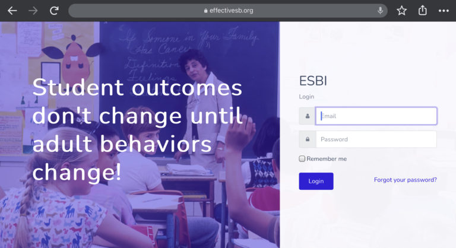
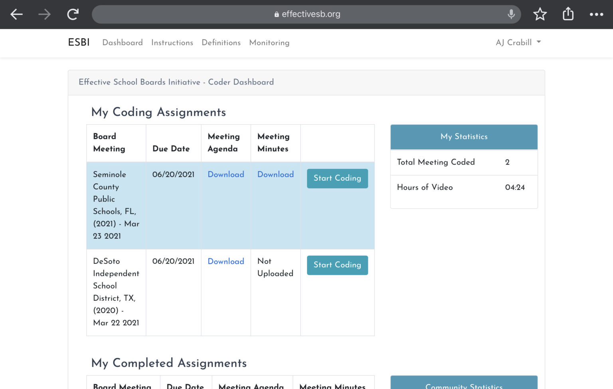
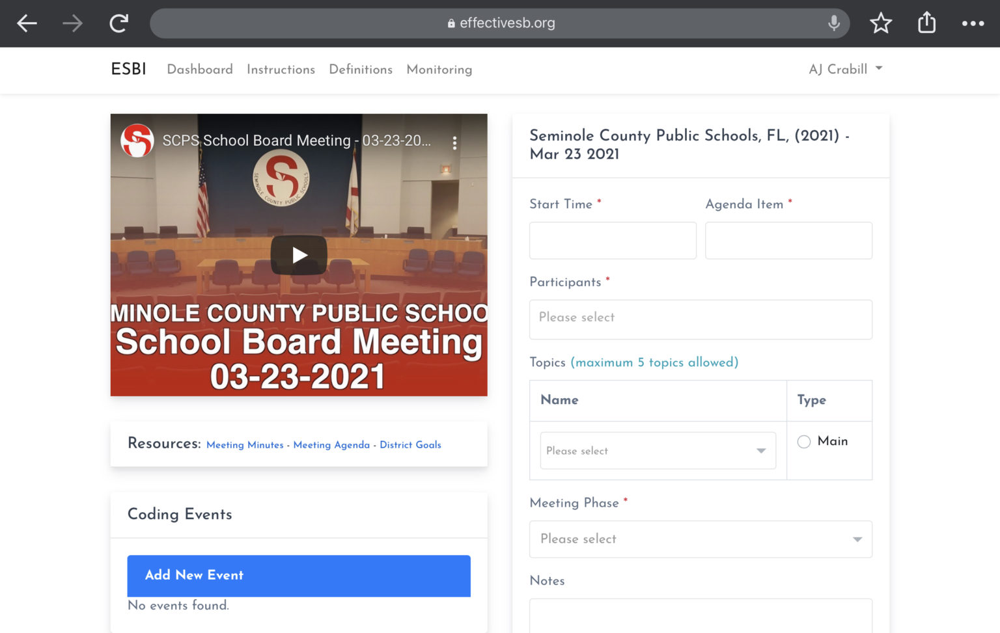
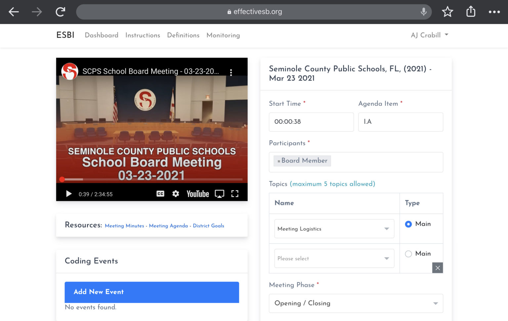
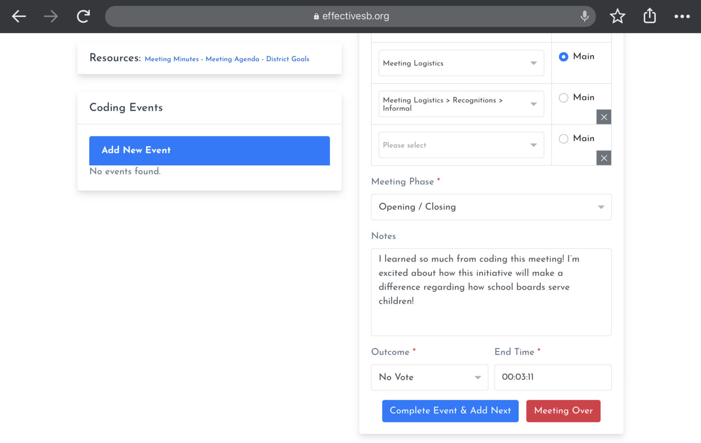
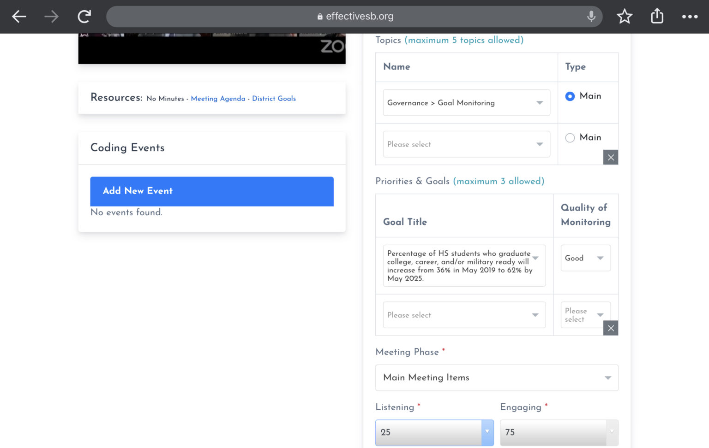

Navigating The ESBI Coder Dashboard
To begin coding, first go to www.effectiveschoolboards.org and click, “Login” in the upper right hand corner. This will take you to the ESBI Login screen.

If you have completed the ESBI workshop but do not have login credentials, please contact us to obtain them. If you have not completed an ESBI workshop, please register for the next available workshop.
Once you have logged in, you will be taken to the ESBI Coder Dashboard. From here, you are able to view your coding assignments (“My Coding Assignments”), view your completed assignments (“My Completed Assignments”), and — if you are an official with a specific school system — view all board meetings for your school system that have been coded in the ESBI database (“All Coded Meetings for My School System”).
From the Dashboard you can also access the coding instructions (“Instructions”), coding definitions (“Definitions”), and monitoring rubric (“Monitoring”) along the top navigation bar, and your ESBI Profile by clicking your name in the upper right hand corner.

How Board Meetings Are Coded
The intention of the ESBI coding process is to identify how school boards spent their time during regular public meetings, what topics they focused that time on, and who participated in the discussion of the topic. To capture the nuance of all of this, board meetings are broken up into units of time called "Events." Within each event, coders will be coding the Meeting Phase, Participants, Topics, and Outcomes.
What is an “Event”?
Coders should first reference the meeting agenda item announced in the video. Each agenda item is considered a separate event. As such, coders should submit a new event whenever the meeting moves to the next agenda item. There are three exceptions to this rule:
- Public Comment Agenda Item: There will generally be a section of a meeting (which is usually noted as an agenda item) where community members are invited to speak to the board about anything. In these instances, a new Event should be logged for each new person that speaks (called “Participants”). For example, if four people speak during a public comment agenda item, each getting the allocated time, there should be four entered Events.
- Public Comment Within Item: Sometimes, for specific agenda items, the board will invite public commentary on that agenda item itself. In this instance, again, the public comments should be coded as separate events for each speaker. The board discussion of the item should be coded as normal. For example, if six people offer comments on an agenda item related to reauthorization of a vendor contract, there should be seven entered Events: one for each speaker during public comment, and one for the board discussion of the vendor contract.
- Consent Agenda Items: Often, consent agenda items are listed separately on the published meeting agenda, even though they are all voted on at once. For example, items 12-41 on an agenda may not actually be discussed explicitly during a meeting because they are all being voted on at once. In this instance, the consent agenda discussion (i.e., items 12-41 in this example) should all be coded as one Event rather than 29 separate Events.
To make this clear, consider the following simple agenda:
1. Call to Order and Opening Statements
2. Goal Monitoring: Elementary Math
3. Consideration of Annual Budget
- 3 community members commented on this item
4. Consideration of Pencil Contract
5. Consideration of Carrot Contract
6. Public Comment
- 2 community members gave public comments
In the above example, there would be 10 different Events coded.
For a slightly more complicated agenda, the work is the same:
I. Opening
a. Pledge
b. Roll Call
c. Recognitions
1. Student
2. Student
3. Student
II. Monitoring
a. Goal 1 Monitoring Report: Literacy
III. Public Comments
a. Parent
b. Community Member
c. Parent
d. Community Partner
IV. Approvals
a. Minutes
1. March Minutes
2. April Minutes
b. Consent Agenda
1. Paper Contract
2. Pencil Contract
3. Carrot Contract
4. Paint Contract
c. Regular Agenda
1. Textbook Contract
V. Closing
a. Adjournment
In the above example, there would be 15 different Events coded.
What are “Participants”?
The Participant codes are simply codes for the people who are speaking during an Event (e.g., principal, school board member). See coding definitions for more detailed definitions.
Events may have multiple Participants coded, with the exception of public comment Events (as per the exceptions in the Events explanation above) which have only one Participant coded.
What are “Topics”?
One of the main items being coded are Topics, which are defined as the types of issues that are being discussed during Events. There are ten main Topics, and these ten are referred to as Parent Codes. Most of the Parent Codes have Child Codes nested under them and some of the Child Codes break down further into distinct Grandchild Codes. For example, if someone speaks at the board meeting about how many students are assigned to each classroom, the Parent Code, “School Programming and Engagement” is not specific enough. Neither is the Child Code, “Curriculum and Instruction.” The most appropriate Topic code for that conversation would be the Grandchild Code, “Class Size.” To code that conversation, the coder would select the following Topic:
School Programming and Engagement > Curriculum and Instruction > Class Size
Altogether there are just over 100 Topic codes; school board meetings can be complex. See coding definitions for more detailed definitions.
If the selected Topic is “Governance > Goal Monitoring”, coders will further specify which goal is being monitored and rate the quality of the monitoring that is happening. See progress monitoring for the monitoring quality rubric.
Coding Instructions
To initiate the coding process, find the board meeting you want to work on in the “My Coding Assignments” section and click on, “Start Coding.” This will bring you to the coding page where the video for the board meeting is in the upper left side of the screen, the list of coded events is directly below the video (this area begins empty, with “No events found”), and the space for entering information about meeting events taking up the entire right half of the screen.
What are “Phases”?
Each Event will be coded for what type of Event it is, which we call “Phases.” There are three main types of Phases: Main Meeting Items, Opening/Closing, and Public comment. See coding definitions for more detailed definitions. Each Event should only get one Phase.
If the Phase is “Main Meeting Items”, coders will further be asked to specify the approximate percent of time in that Phase that is spent on just listening to an invited presentation (as opposed to questions/answers and deliberation).

To begin coding the meeting:
-
- Click the play button on the video and wait for the board meeting to commence (not just the video starting, but the meeting starting; sometimes there is empty space at the beginning of videos).
- Once the meeting begins, capture the “Start Time” in hh:mm:ss format.
- Example: In the screenshot pictured below, the video starts at 00:00:00, but the meeting is begun for another 38 seconds so in “Start Time”, 00:00:38 was entered.
- Capture the "Agenda Item" that corresponds with what is occurring in this Meeting Phase. This will not always proceed in the sequence indicated on the agenda; always follow the video, not the minutes or agenda. Sometimes the sequence system will use letters rather than numbers; capture the data the same.
- If there are sub-agenda items within larger agenda items, use the most specific subunit of the agenda. For example, if there is an a, b, and c within agenda item 1, consider each of a, b, and c a separate event.
- If an item is on the agenda but is not mentioned in any form (except in the case of parts of a consent agenda), do NOT code it. However, if an agenda item is mentioned and then skipped (like if the board says, "Now it's time for agenda item 5. But we are going to skip that," or "We're going to public comments now. There are no public comments, however, so we will move on") then do mark that item as an Event and use the "Outcome" code, "Skipped" (there is no Topic code when the Outcome code is Skipped).
- Example: In the screenshot pictured below, the first item is I.A so in “Agenda Item”, I.A was entered.
- Capture the "Participant" from the video. For a given speaker, select the Participant code that most describes the role they are serving in during the Event. For example, if a Participant is both a parent and a teacher but are discussing labor negotiation expectations, code them as Teacher rather than Parent.
- For each Event, capture no more than the three most primary Participants, based on the amount of time they speak.
- Do not guess. If the participant is unknown, select Unknown.
- Example: In the screenshot pictured below, the primary speaker during the opening of the meeting was a board member, so that was selected.

-
- Capture the "Topic" from the video. Use the Coding Definitions to identify the most appropriate Topic code.
- For each Event, identify the main Topic. If you select multiple topics, you will need to click the radio button to indicate which one is the Main topic.
- For each Event, capture no more than four secondary Topics.
- If there is no topic, like if the board says, "Let's talk about agenda item 5. Actually we are going to skip that," then just leave it blank.
- Example: In the screenshot pictured above, the opening only contained standard logistical matters, so “Meeting Logistics” was selected as the Topic.
- Capture the "Meeting Phase" by selecting one of the options from the dropdown menu. If the Phase is “Main Meeting Items”, also code the approximate percent of time that is being spent in that Event on a presentation.
- Select “Opening / Closing” only if the items are part of the rituals that take place at the very start, the very end of the meeting, or the transition into/out of meetings. See the coding definitions for a more detailed definition
- Select "Main Meeting Items" for all items on the agenda that are not public comment or opening/closing.
- When coding this meeting phase, indicate the approximate share of time (0%, 25%, 50%, 75%, 100%) that the board was listening to a presentation or report and the remaining share that the board was discussing or debating. For example, if the board listened to a presentation half the time and asked questions half the time, this would be coded as 50% listening and 50% engaging. See the coding definitions for a more detailed definition
- Select "Public Comment" only if the agenda indicates that it is time set aside for members of the public to speak or if the board moves to Public Comment within an agenda item. See the coding definitions for a more detailed definition.
- If someone reads a group of public comments rather than the members of the public delivering their own comments, code the read comments together instead of individually and use the "Topic" code, "Meeting Logistics > Reading of Public Comments" as the main Topic before capturing any other Topics.
- Example: In the screenshot pictured, the meeting is still getting underway with pre-meeting rituals, so “Opening / Closing” was selected as the Meeting Phase.
- Capture what the "Outcome" of the Event was by indicating either "Full Passage", "Partial Passage", "Full Failure", "No Vote", or "Skipped", as defined below:
- Full Passage: All motions passed (which includes if there was only one vote and it passed).
- Partial Passage: There are multiple motions on a single agenda item and some pass while others do not.
- Full Failure: All motions failed (which includes if there was only one motion and it failed).
- No Vote: Nothing was put up for vote during this item.
- Skipped: The agenda item was acknowledged but then skipped.
- Determine the vote outcome based on what is being actively considered. In other words, if in board decides to change what they are voting on and it passes, this would be "Full Passage."
- Example: In the screenshot pictured below, there was no vote taken so “No Vote” was selected.
- Once the Event changes, capture the “End Time” for the Event in hh:mm:ss format.
- Example: In the screenshot pictured below, the Event changes when the board moves from Pledge to the next item on the agenda which is Roll Call, at just past 3 minutes. So for “End Time”, 00:03:11 was entered.
- Capture the "Topic" from the video. Use the Coding Definitions to identify the most appropriate Topic code.

Special Items
- Capture whether or not the Event spent time spent monitoring the Board’s priorities. If the Topic code “Governance > Goal Monitoring” is selected then a new section will appear called, “Priorities & Goals.” Here you will identify which of the board’s priorities or goals was being monitored. In addition, you will make a subjective assessment regarding the quality of the monitoring based on the progress monitoring guidelines.
- Events only meet the definition of "Monitoring" if the agenda clearly identifies which board priority/board goal is being monitored and data related to the priority/goal is discussed.
- Example: In the screenshot pictured below, the "Topic" was identified as "Governance > Goal Monitoring" and the board engaged in monitoring its goal about high school graduates for at least half of the discussion, so the high school related goal is selected and the "Quality of Monitoring" is identified as, "Good".
- When the "Meeting Phase" is "Main Meeting Items", remember to indicate how much of the Event involved board members listening to presentations rather than actively engaging.
- Example: In the screenshot pictured below, the "Meeting Phase" was identified as "Main Meeting Items" and roughly a quarter of the Event involved the board receiving a presentation so "Listening" is set to 25 and "Engaging" is set to 75.
- If someone is reading a group of public comments, code that entire group together rather than trying to code them individually. Use the Topic code, "Meeting Logistics > Reading of Public Comments" as the main Topic code before capturing any other Topics. Think of this as the consent agenda of public comments; it's all captured in one Event.
- Capture any “Notes” about the Event that you believe future board members or researchers would find of interest.

Pro Tips
It is strongly recommended to review these items before “Completing” a school board coding because these represent the most common mistakes coders make.
- Agenda Items are the unit of coding, EXCEPT for PUBLIC COMMENT and CONSENT AGENDA: The ESBI instrument codes each individual “Event” in a school board meeting. This almost always coincides with individual agenda items but, during public comment, coincides with individual speakers and all items on a consent agenda are collapsed into one event.
- Count and Code the Lowest Level: If there is a menu item called "New Business" and it has three items beneath it called, "Biz 1", "Biz 2", and "Biz 3" and Biz 2 has two items beneath it called "Biz 2 Contract A" and Biz 2 Contract B", then how many items do you code?
I. New Business a. Biz 1 b. Biz 2 1. Biz 2 Contract A 2. Biz 2 Contract B c. Biz 3To get the answer, you have to count and code the lowest level. Because "New Business" has subitems beneath it, it's not the lowest level. So next you go to Biz 1. It doesn't have an items below it, so it's the lowest level. So that's one item to code.
When you go to Biz 2, it has items beneath it so it's not the lowest level. So next you to go Biz 2 Contract A. It doesn't have items beneath it so it is the lowest level and should be counted. Same with Biz 2 Contract B. So that's now a total of three items to code (Biz 1, Biz 2 Contract A, and Biz 2 Contract B).
Biz 3 doesn't have any items beneath it so it gets counted and coded as well. So the final answer: you count four lowest level items so there should be four items coded.
Remember, the exceptions to this are public comments (when delivered by the public) and consent agendas (when multiple items are voted on simultaneously).
- Search by Topic Keyword: Not sure which Topic code to use? There's ~100 of them to choose from so the easiest thing to do is search for them by keyword by typing various keywords into the "Topics" box when you're coding. If any of the Topic codes have that word in it, it'll come right up. For example, if someone is discussing high school graduation ceremonies, you can type "graduation" to see if any codes include that keyword. The other way is slower but more thorough: do a search on the coding definitions page to see if the keyword exists in either the Topic code itself or the description of it.
- Opening & Closing: Did you code both the opening of the meeting and the closing of the meeting? These items have their own meeting phase (“Opening / Closing”) and should appear in almost every meeting unless the video cuts them off. Even if the meeting opening spans over multiple agenda items (e.g., there's a pledge of allegiance, then a roll call etc.), code each agenda item separately, simply selecting "Opening / Closing" as the meeting phase for each. Events with the "Opening / Closing" Meeting Phase most commonly have the "Topic" code: Meeting Logistics.
- We Only Code Video: While the agenda and minutes are often provided, only the video is being coded. So if there is a discrepancy between the minutes and video, code the video. If there is a discrepancy between the agenda and video, code the video.
- Formal or Informal Recognition?: If the recognition is on the agenda it’s formal and if it’s not, it’s informal.
- Goal Monitoring or Data Viewing?: If it’s on the agenda as goal monitoring and time is actually spent monitoring the goals, it’s goal monitoring. If the agenda item is specifically about evaluating the performance of the board’s adopted priorities and time is actually spent evaluating priority performance, it’s goal monitoring — it’s just happening by a different name. But if it’s not on the agenda, it’s definitely not goal monitoring because monitoring must be an intentional act. Conversely, random acts of data viewing can occur at any time.
- Who Participated?: If the speaker is identified or self identifies, then record them as such. If not, indicated, "Unknown." But don't guess; either the participant is made clear in the video or they are not.
- When to Start and Stop?: The current Event continues until the next Event begins. So if there's a little downtime in the video, it gets added on to the prior Event.